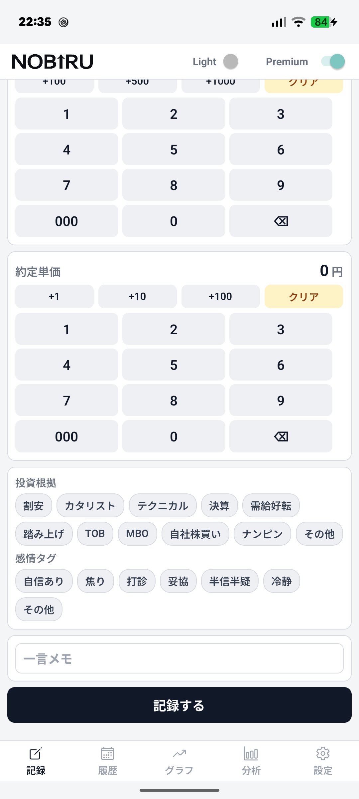
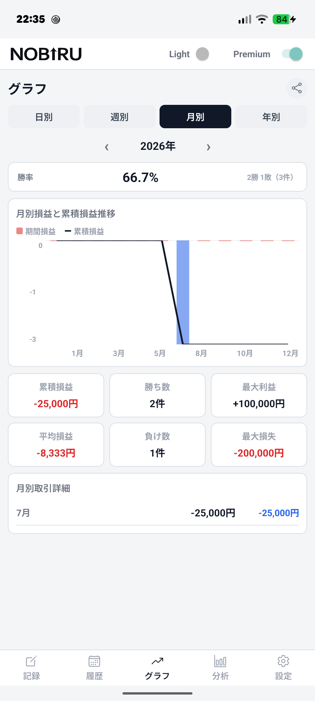
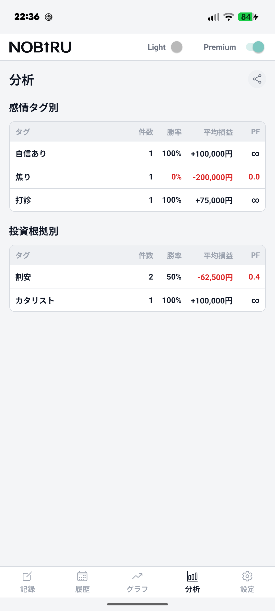
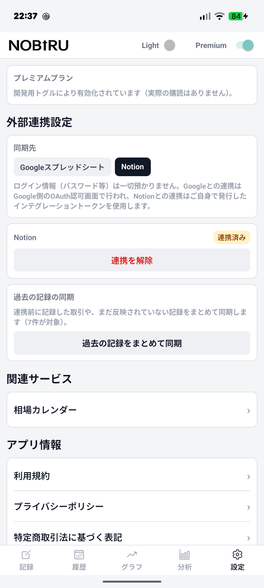
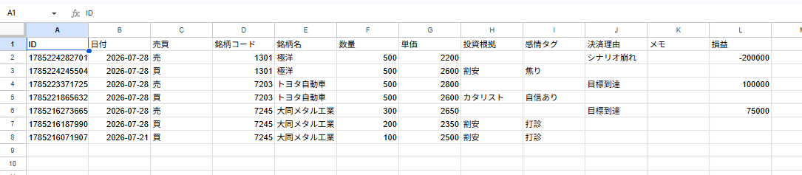
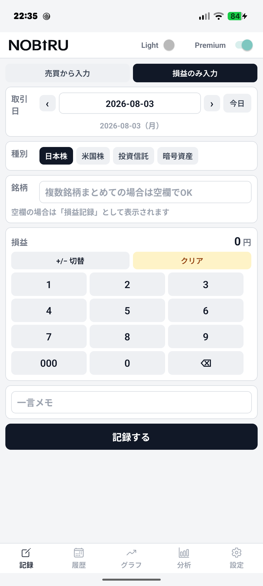
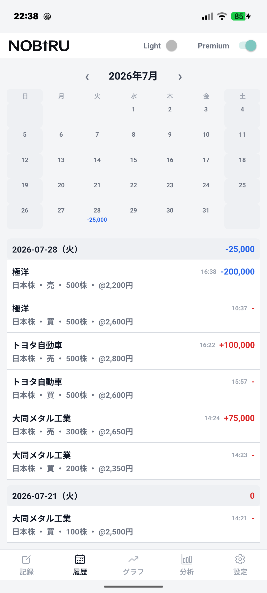

売買の根拠・感情を記録し、結果と照らし合わせて振り返る。
クラウドに刻む、自分だけの投資戦略。
配信準備中です。公開され次第、こちらのボタンからストアへ移動できるようになります。
個人投資家が陥りやすい悪循環を、株ノートNOBIRUが解決します
「その時なぜそう判断したのか」「心理状態はどうだったか」が残っていない
勝ちパターン・負けパターンが見えず、感覚で売買し続けている
でも手書きやスプレッドシートは続かず、振り返りの効果が薄い
売買のたびに「なぜ買ったか」「どんな気持ちだったか」をワンタップのタグで記録。日記のように書く必要はありません。


日別/週別/月別/年別の損益推移、累積損益、勝率、最大利益・最大損失を自動でグラフ化。数値で成績が把握できます。
感情タグ別の勝率・平均損益、投資根拠別のプロフィットファクターを表形式で確認。「焦って買った時は勝率が低い」といった傾向が見えます。


記録した取引を、あなたのGoogleスプレッドシートやNotionデータベースへリアルタイムで自動保存。運営サーバーを一切経由しない設計です。

アカウント登録一切なし。取引データは端末内に保存され、外部に送信されるのは自分で選んだ同期先のみです。


日本株に加え、米国株・投資信託・暗号資産の記録にも対応。複数ポートフォリオ管理も可能です。
日本株の基本機能
プレミアム機能
約11%お得
通常 ¥1,800
約14%お得
通常 ¥3,600
価格はストア公開時に確定します。実際の請求額はApp Store / Google Playの決済画面でご確認ください。
投資は個人的で慎重な決定。株ノートNOBIRUはあなたのデータを厳格に保護します。
アカウント登録一切なし。インストールして即使用できます。
すべての取引データは端末内のみに保存。運営サーバーには送信されません。
外部連携はあなたが選んだ先のみ。Google/Notionアカウント連携で同期します。
アプリを退会してもあなたのGoogle/Notionに保存されたデータは手元に残り続けます。
いいえ。株ノートNOBIRUは記録・分析ツールです。売買の推奨や投資助言は一切行いません。すべての判断はご自身の責任で行ってください。
無料版では日本株の売買記録と取引履歴の確認ができます。グラフ・分析機能や外部連携、複数資産対応はプレミアムプランです。
はい。いつでも解約できます。最低利用期間はありません。6ヶ月・年間プランでも途中解約できます（返金はプラン規約に従います）。
無料版は日本株のみです。プレミアムプランなら米国株・投資信託・暗号資産に対応しています。
データは端末内に保存されます。Google/Notionへの同期を有効にしておけば、デバイス破損時も別のデバイスから復元できます。
はい。同じApple IDまたはGoogleアカウントでログインすれば、複数デバイスで同期されます。